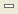

Cheat Sheet view¶
Used to display the current cheat sheet offering guided step-by-step assistance in performing a task. Only one cheat sheet can be used at a time, although the system will remember what step you are on when you close a cheat sheet.
A normal cheat sheet is displayed as a simple list of tasks.

A Composite Cheatsheet is displayed using a task explorer to review available tasks, and a tasks detail pane to show the individual steps making up the selected task.

Toolbar¶
These icons appear in the toolbar:
 Collapses all the expanded steps except the current step or expands steps to the last
expanded state. Click to toggle between these two states.
Collapses all the expanded steps except the current step or expands steps to the last
expanded state. Click to toggle between these two states. Allows you to select and open another cheat sheet. The completion status of the active
cheat sheet is saved. Then, the active cheat sheet is closed and the selected cheat sheet is
opened.
Allows you to select and open another cheat sheet. The completion status of the active
cheat sheet is saved. Then, the active cheat sheet is closed and the selected cheat sheet is
opened.-  Hides the cheat sheet.
- !cheatsheet-save.png!Saves the completion status of the active cheat sheet and closes it.
Related tasks
Working with composite cheat sheets
Related reference